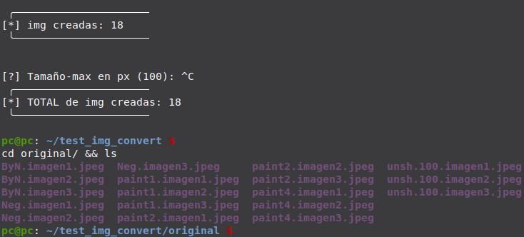
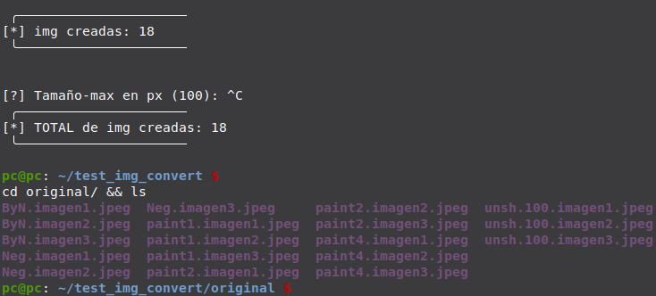

Proyectos

Buscadores_web.bat / .sh
- Herramienta con múltiples buscadores, páginas web y recursos.
- Busca un término por categorías, en una de las opciones o en todas.

Alarma_GSM.ino
- Alarma realizada en Arduino con comunicación por módulo GSM.
- Avisa mediante llamadas / sms a una lista números en el orden definido.
- Monitoriza / Activa mediante sms y llamadas los sensores / actuadores conectados.
- Permite conectar multitud de sensores y actuadores para su monitorización y control, accesos, presencia, niveles, tensiones, GPS, relés, contactores, ...
Autotube.sh
- Reproduce listas de reproducción de Youtube y Spotify en bucle.
- Conecta con una VPN + Reproduce los videos de una o varias listas + Hace una pausa personalizada + Cambia de IP con otra VPN + (loop).

Roli-sounds.sh
- Banco de sonidos personalizado del teclado Roland-GO:Keys.
- Búsqueda de sonidos por Tipos, Estilos, Cualidades, Efectos, Favoritos, Listas de Estilos, etc.
- Permite buscar sonidos por una o varias cualidades: FX delay:h sustain:l phaser bass-fx Soul Rock, ...
html_build.sh
- Construye la estructura y enlaza los archivos de un proyecto web.
- Realiza copias de seguridad del proyecto.
*html_build.sh Proyecto
Proyecto/(index.html)(css/Proyecto.css)(fonts/)(img/buttons/, icons/)(jscript/jstyle_Proyecto.js, jdata_Proyecto.js)
img_convert.sh
- Convierte Imágenes con ImageMagick.
- Modifica metadatos con Exiftool.
- Recorta, redimensiona, cambia de formato, y aplica múltiples filtros y efectos a las imágenes de una carpeta.
 

Sed_loop-R.sh
- Modifica recursivamente los archivos de una o varias extensiones dentro de la ruta de trabajo.
- Elije una extensión o modifica recursivamente un proyecto web (.html, .css, .js).
*Añade la clase "mi-clase" a todas las etiquetas ul sin atributos:
Buscar: <ul>
Cambiar:<ul class="mi-clase">

name_cleaner.sh
- Borra / Renombra / numera por tipos los archivos de una carpeta.
- Renombra todos los archivos de una carpeta:
- Borrando o cambiando una parte en común (www.descargas.com, Album-Hits 2025).
- Agregando un término al final (--Estilo --Tipo).
- Numerando al principio del nombre y eliminando o no el nombre.

Eachine VR-D2Pro Circuit Bending
- Se modifica la electrónica de las gafas FPV Eachine VR-D2Pro.
- Se le añade entrada de video RCA y salida de audio Jack 3.5.
Casio SA-1 Circuit Bending
- Modificación de la electrónica del teclado Casio SA-1.
- Se le añade switch de octavas + 3 niveles de reverb base con modulación mediante LDR.